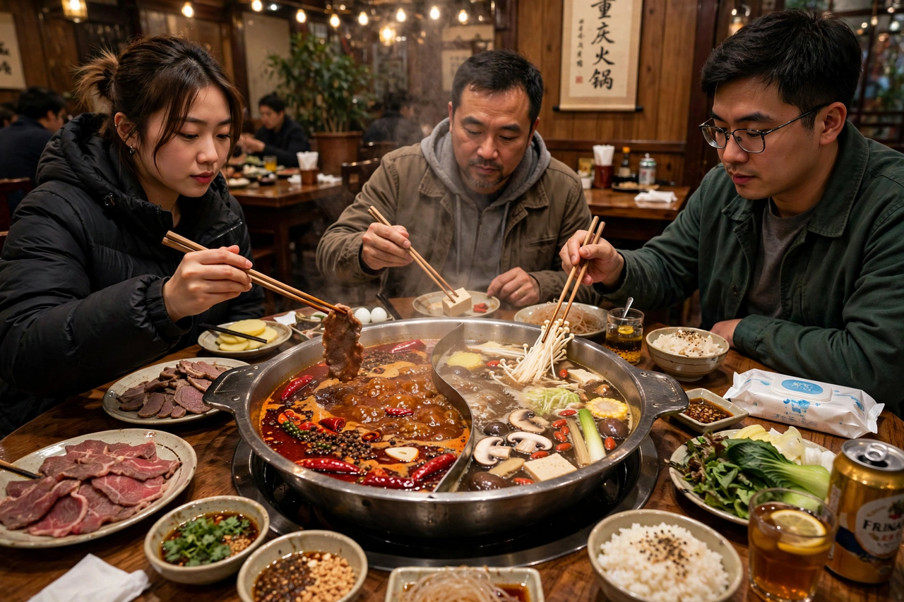

Sichuan cuisine
From Wikipedia, the free encyclopedia

Sichuan cuisine is the cooking of China's Sichuan province and Chongqing, one of the Four Great Traditions of Chinese food, famous worldwide for má là — the numbing-and-hot one-two punch of Sichuan pepper and dried red chillies. Its home repertoire is subtler than the slogan: classical Sichuan cooking is said to command a repertoire of complex flavour profiles — fish-fragrant, strange-flavour, garlic paste, red-oil, scorched-chilli and more — applied to everything from mapo tofu and kung pao chicken to dan dan noodles and twice-cooked pork. Chengdu, the provincial capital, was named UNESCO's first City of Gastronomy in Asia in 2010.
The pepper and the chilli
Sichuan pepper (huājiāo, the husk of Zanthoxylum berries) is ancient and local, used since Han-dynasty kitchens for its citrusy, mouth-tingling chemistry (the molecule sanshool literally sets nerves buzzing at a distinctive frequency). The chilli is the immigrant: it arrived from the Americas only in the late Ming and took hold in the damp southwest — Guizhou first, then Sichuan — within the last three centuries. The marriage of the two, sealed in chilli-bean paste (doubanjiang) from Pixian county, fermented for years in earthenware jars, defines the modern cuisine.
Dishes and settings
Hot pot is the social summit — Chongqing's version swims in beef tallow and chillies, served yuan-yang style, split between fiery and mild broth, around which diners cook morsels communally. Around it: water-boiled fish under a drift of chillies, dry-fried green beans, fuqi feipian (sliced beef and offal in chilli oil), mouth-watering chicken, and the teahouses of Chengdu, where the meal slows to gaiwan tea and ear-cleaning. Sichuan food's global spread since the 2000s — with Chengdu restaurants franchised worldwide — carried mala from regional signature to international flavour trend.